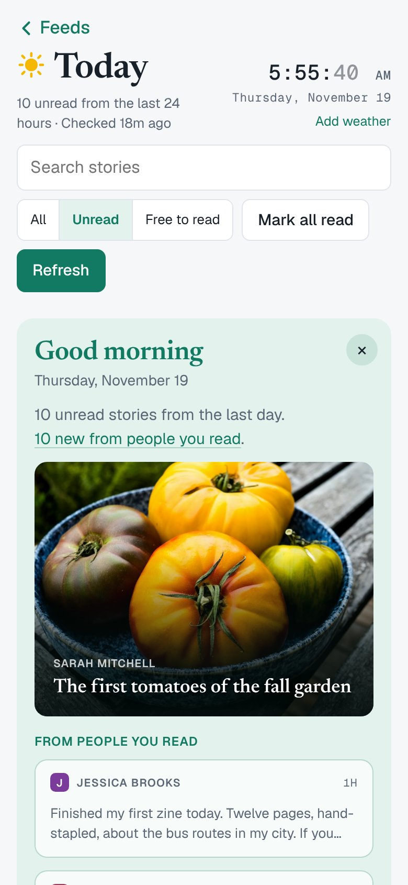

Read along early.
Try new versions of The Reading Room before they reach the App Store, and tell me what’s working and what isn’t.
Join the beta on TestFlightHow to join
Get TestFlight. It’s Apple’s free app for trying beta software. Install it on your Mac, iPhone or iPad.
Open the invite. Use the Join button on this page, on the device you want to read on.
Install and read. TestFlight offers each new version as it comes out.
In the beta now
Version 1.2.8: build 1150 on the Mac, build 158 on iPhone and iPad.
- My Day in four parts. Coming up lists the next two weeks from your calendar, the month shows your events at a glance, and Stocks and Crypto show each price with the day’s low and high and a trend line.
- Your compass, a day at a time. Look back at how a day went, or plan one ahead.
- To do. My Day shows your reminders; Coming up has the calendar.
- Unfollow from someone’s page.
- One card per post. Something you posted to both Mastodon and Bluesky shows once in Your posts.
Plus everything in 1.2.7, approved for the App Store on iPhone and iPad (the Mac version is in review): My Day, Weekly Preview and Weeknotes, Day One questions, Trending, quote cards and more.
Something not right? Send feedback from TestFlight; a screenshot helps.
What to expect
This is unfinished software, so you’ll find rough edges. That’s the point. If something breaks or feels wrong, send feedback through TestFlight, or write through the support page.
About your privacy
The app works the same as always: no account, no tracking, no ads. If you connect an email address, the app talks straight to your own mail provider; your password stays in your device’s Keychain, and nothing passes through The Reading Room. When you like a post, the app tells that post’s site directly from your device, and it looks up likes and replies at webmention.io, a public service many blogs use. TestFlight is Apple’s service, and it shares crash reports, usage information and any feedback you send with the developer. Read the details.
